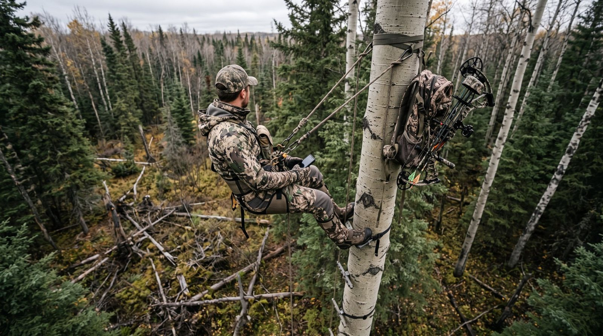
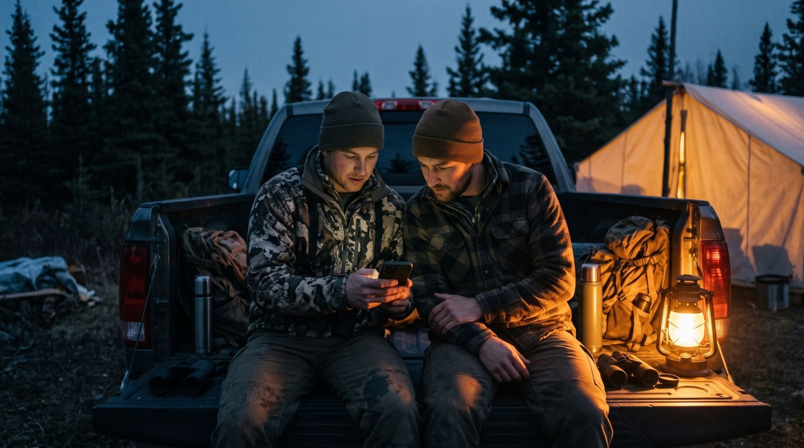
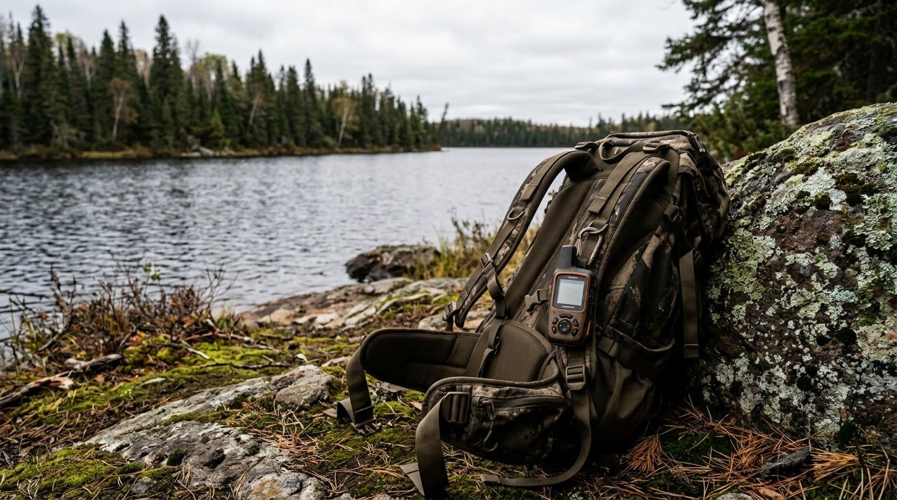
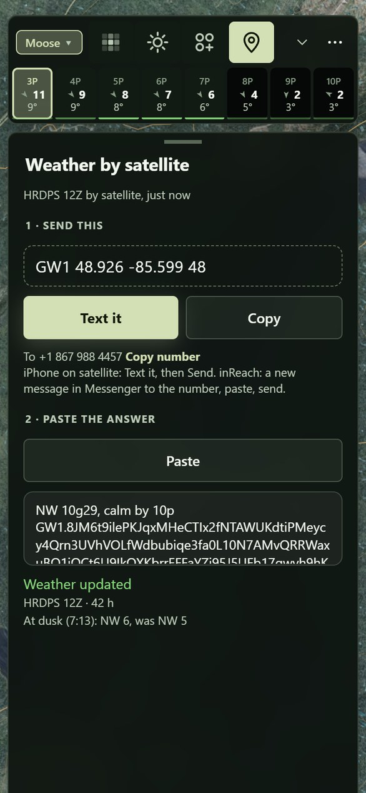
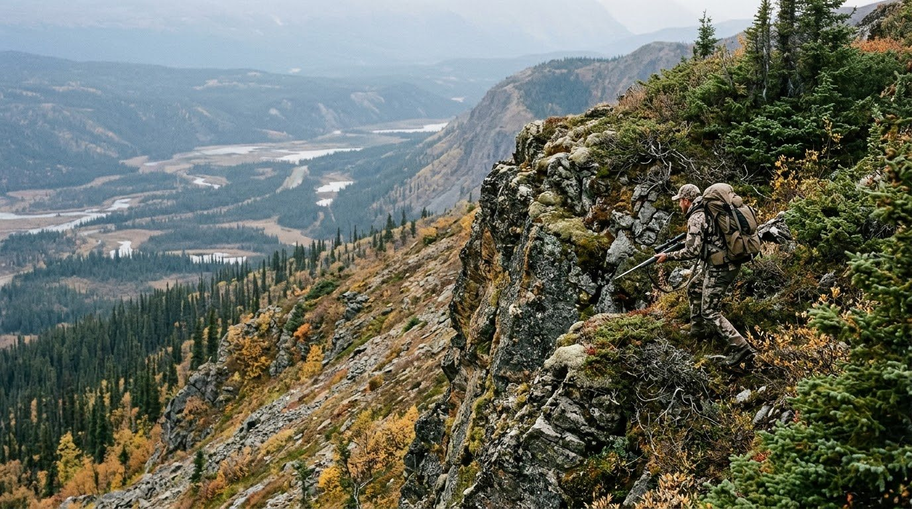

The first rule of hunting
Don't get winded.
Groundwind is the hunting app for the wind where you stand.
- Your HD forecast, solved over HD LiDAR and every stand of trees, down to head height where your scent leaves you.
- Your scent cone, from where you stand, on your ground.
- Where he beds, where you can walk, where you can shoot, from the bush at eye level.
- Each puff of powder calibrates the wind to what you actually felt.
- Works with no signal. HD weather and party status come in by satellite.
Built on a physical wind model and published research for every layer.

It's made for your phone. Point the camera here to open it there, then add it to your home screen.
He lives by his nose.
A moose reads the air the way you read a map. He circles downwind of a call before he commits, and one thread of your scent in the wrong place ends the hunt before it starts. You never know it happened. Why the bull circles for your wind.
The wind at your face isn't what's in your forecast.
Forecasts are calibrated 10 m up over open ground. Your scent leaves you at head height under the trees, where it bends over the ridge, slows in the spruce and drains downhill at dusk. Groundwind shows you where your scent is really going.
How
The wind comes back behind the summit
- Behind the summitAt Highland Lake the forecast draws one straight south wind over the mountain. On the ground it breaks off the summit and circles back, so on the north face your scent runs back up toward the top and spreads every way. The lee of a ridge or a tree line tumbles the same way.
- Cold air at duskOnce the sun is down the air on a slope cools and slides downhill, whatever the forecast says. On the same mountain at 8 pm, with a south wind in the forecast, your scent drains east down the slope.
- Up a treeFrom a stand your scent rides the air before it comes down. Off a 6 m bank on a still night it is strong right below you from the ground, comes down 60 m out from a 4 m stand and 160 m out from 6 m. Hold your dot to say how high you sit.
Forecast south, scent drains east
From the ground, then 4 and 6 m up

So we built the wind for your ground.
Groundwind takes the 2.5 km HD forecast and solves it over HD LiDAR and every stand of trees, then adds the thermals, the leaves and the swirl, down to head height for any minute of the week. The cone is drawn where your scent is really going, from the ground or from your stand.
Every layer is built on published research, and it all runs on your phone with no bars.
The lake breeze, as the app drew it
- ForecastThe 2.5 km HD forecast (HRDPS) at 10 and 80 m, so it knows when the ground air comes loose from the wind above on a clear, cold night.
- TerrainWindNinja's full 3D flow solve over the 1 m LiDAR ground, in 16 directions: faster over the bluff, slack in its lee, breaking off behind a summit and circling back.
- Heat and coldCold air draining downhill at dusk, warm air rising upslope by day, lake and land breezes.
- Trees and leavesStand height and closure from the LiDAR point cloud, the hardwoods' leaves coming down by date, wind channelled down the slots between stands.
- Gusts and swirlThe forecast's gusts widen the cone, and the air tumbles behind tree lines, in openings and in the lee of a ridge.
- Your checksEach puff corrects the model near you and teaches it how that kind of air behaves at your spot.
Know the bush before you're in it.
The LiDAR reads the brush at eye level. The thicket that takes an hour to cross is where he beds. The old burn is where he feeds, where you walk quietly and where you can see far enough to shoot. Plan the walk in and the sit before you leave camp.
How
The 1991 burn is open, the fir is thicket
Bush and sight lines
Bush thickness comes from the LiDAR point cloud as open, light, thick or thicket. It decides how far you'll see, how loud the walk is, and where a moose can stand unseen.
- BushThe Bush view colours the brush between 0.5 and 3 m, from open to thicket.
- RangeThe Bow view is your range: open lanes stay clear and thick bush goes dark, so you know where you'll be able to see and shoot.
- Sight linesDig in on any spot for how far you'll see in eight directions, in metres.
- GoingRoutes and the moose scores both read it: thick bush is slow and loud to walk, and it's cover.
Eye-level cover isn't the canopy. A closed canopy shades the brush out, while a cut or a burn fills in with suckers and saplings. Groundwind counts the LiDAR returns between 0.5 and 3 m against everything below 3 m, cell by 10 m cell. Where the point cloud hasn't been fetched yet, it estimates the brush from each stand's age and makeup.
On the move
A lot of moose and elk hunting is moving. You angle in on a bull you've heard, still-hunt an edge or work round a bluff, and that's where a forecast is least use. Before you step round the corner, see what the air is doing there and how far you'll see.
- AngleLog his grunts with Heard. The map draws his line and where he'd swing to get your wind, so you can angle in from the right side.
- WindThe streaks run at head height: over the bluff, down the draw, round the edge of the stand.
- ScentDrop a cone at the corner ahead and see where you'd blow before you get there.
- RangeBefore you step out, Bow and the sight lines tell you how far you'll see from the next spot.
A bluff, a corner and the sight lines
Routes and the log
Routes finds three ways in on foot over the LiDAR ground. One is the easiest walk, and the hunt routes skirt the best ground and keep your scent off it. Your track, the calls you heard and your wind checks are grouped into outings as you go.
Each puff calibrates the wind.
Puff your powder and tap where it went. The wind calibrates to what you actually felt, and remembers how the air moves where you hunt.
How
One check, and the cone follows.
A check pulls the ground wind inside its ring toward what you felt, and it fades with time, more slowly if you say the wind has held. It also becomes a lesson for its kind of air, like cold air draining, a lake breeze or a slot in the trees. That lesson is a turn and a speed correction the model applies wherever that air turns up, forgotten over about two weeks.
Each check saves what the forecast and the model said beside what you felt, so the hunt log keeps score of how often each was right. If you say yes when the app asks, your checks also come to us without your name or notes, and they teach the ground wind where it's wrong. Settings, then Share wind checks, switches it off.

Plan the sit. Walk in. Hunt.
Put the party where you'll sit tonight and see whose scent drifts over whom, where the wind swirls and where they're likely to be. It saves you walking in to find the wind totally in the wrong place.
How
The party
Set the time to the evening hunt and drop the sitters. Each cone shows on the evening wind, numbered, with whose scent drifts over whom, so you can move them until nobody is on the way he'll come in. The old rule still holds. Put the caller 40 to 50 m upwind of the shooter, so a bull circling downwind of the calls walks into the shooter. More on calling with the wind.
Where they'll be
Groundwind scores moose, deer, grouse and bear across your area, hour by hour for the week ahead, from the habitat, the last ten days of weather, the wind, the rut and the leaves. It doesn't mean they're there. Log what you see and the map leans toward it for about a week, and blank sits push it down. Every score shows its reasons, and every rule is a knob from off to double.
- MooseBrowse 5 to 20 years after a cut or burn, close to cover. Shores in the rut. Bedded through a warm spell, moving on the first cool day.
- DeerSouth-facing aspen and hazel near cuts, lakes and roads.
- GrouseYoung aspen over alder, or spruce and jack pine for spruce grouse. Tight in wind and rain, out on the roads at dawn and dusk.
- BearBerries in 6 to 20-year cuts and burns through September, then denning cover.
The heat shifts with the week's weather
A warm week beds them down
Groundwind reads the last ten days of highs beside the forecast, because moose feel heat early. Every hour's score carries the temperature, and the scoring says plainly when the game is lying up and when the break is coming. The rules come from habitat guides and published field studies.
- Moose, deerHeat stress starts near 14 °C. By the third day of highs over 18 °C they bed through the heat and move at night. The first cool day after is the one to be out.
- GrouseTight in wind over 25 km/h and in rain. Calm, cool mornings and the two hours before dark.
- BearLess bothered by heat. On the berries through September, then into denning cover after mid-October.
As a table
| Temperature | Moose activity |
|---|---|
| 10 °C or under | Full |
| 10 to 14 °C | 80% |
| 14 to 20 °C | Half |
| Over 20 °C | About a third |
An example week, in the app's words
- Mon19°
- Tue21°
- Wed22°
- Thu13°
warm spell, day 3: bedded through the heat, moving at night
first cool day after 3 warm ones: expect movement
The wind turns, and 1's scent drifts over 2

No signal. HD weather & party status by satellite.
Save your area at camp and all of it works offline. Out for days? Text from your inReach or iPhone and the newest HD forecast comes back by satellite and pulled into the app, so you’re always ready for the next ridge.
How
With signal, Groundwind asks for each new run of the 2.5 km HD forecast (HRDPS) as it lands, four times a day, and saves the next two days on your phone with a seven-day outlook behind them. Walk out of service and it's still there, with its age shown.
Out for days, send the line the app writes for your camp to the Groundwind number from an iPhone on satellite or an inReach. The next two days come back in one 160-character text. Paste it in and the ground wind, your scent cone and the heat map all run on it, because the terrain and the bush are already on your phone.
The text carries the 10 m wind at its turning points, about a dozen a day and back within about 2° and half a km/h on average, far inside the forecast's own error. With it come the gusts, the temperatures and winds aloft that decide whether the wind reaches the ground, cloud, rain and how much the models agree, plus a check that catches a reply cut short. The first words are plain, for an inReach's screen: the wind now, its next big change and the first rain. The camp is in the request, so there's no account to make. On an inReach it's two messages on your plan, one out and one back, and the first time you have signal again the phone fetches the full forecast as usual.

Two days of HD forecast in one text
Prepare as much as you can, bring the best tools you can to the hunt, and adjust it while you're out there, because we all know the best plans don't survive contact with the real world.
We need your help.
Groundwind gets better with your input. Share your wind checks when the app asks, and they teach the ground wind where it's wrong, so we can all be more successful on our hunts.

Try it on our spots.
- Pickle LakeNear White River, ON · WMU 21B
- Lac BaileyQuébec · zone 18
- Highland LakeYukon · GMS 4-09
Open the beta and all three are there. Your own spot will look like them.
Open the betaPut it on your phone
On an iPhone, open the link in Safari, tap Share, then Add to Home Screen. On Android, open it in Chrome and choose Install app. Before you lose signal, save the area in Settings, under Maps on this phone.
Questions
What is Groundwind?
Groundwind is a hunting app that shows the wind at head height and where your scent goes, for moose, elk, deer and bear. It takes the 2.5 km HD forecast (HRDPS), solves it over the 1 m LiDAR ground and every stand of trees, adds the thermals, and draws your scent cone from where you sit. Your own wind checks correct it, and it all works on your phone with no signal.
What does it cost?
Nothing. Groundwind is free during the beta.
iPhone or Android?
Both. Groundwind runs in your phone's browser and goes on the home screen like any app: on an iPhone, Safari's Share, then Add to Home Screen; on Android, Chrome's Install app. No app store and no account.
Does it work with no service?
Yes, once your area is saved on the phone (Settings, then Maps on this phone). The forecast you saved at camp keeps working with its age shown, and your track, calls and wind checks are kept as you go. Out for days, text for the newest forecast from an iPhone on satellite or an inReach: ⋯, then Weather by satellite.
Where does it work?
Where we've built it, on purpose. Each area is a 10 × 10 km block built around someone's spot: Pickle Lake near White River, Lac Bailey in Québec and Highland Lake in the Yukon so far. Request yours anywhere. Ontario and Québec spots are ready within 48 hours, and elsewhere takes longer while we bring in that ground's LiDAR, forest and forecast data.
Why not everywhere?
Because the wind at your head depends on your ridge, your stands and your shoreline, and getting it right takes 1 m LiDAR, the forest inventory and a wind solve over that exact ground. High quality means being deliberate, so you request a spot and we build it.
How is it different from onX, HuntWise or Windy?
Use it beside them. Most of us already carry onX or iHunter for the land and Windy for the weather, and they cover the whole map. Groundwind is your active hunt partner on the spot you're hunting, there to help you make better decisions when it counts. HuntWise, HuntStand and Windy show a forecast wind, worked out for 10 m up over open ground. Groundwind takes it down to head height over your ridge, your stands of trees and your shoreline, draws your scent on that, and lets a puff of powder correct it. It doesn't show who owns the land. What each app does, side by side.
What's a scent cone?
A scent cone is the patch downwind of you where an animal can smell you. Drawn from the forecast, it points straight downwind. Groundwind draws it on the wind at head height, so it bends round the ridge, drains downhill at dusk and widens in the gusts and in the lee of a tree line. Hold your dot to say whether you sit on the ground or in a 4 or 6 m stand, and the cone comes down where your scent would.
What happens to my data?
Your track, pins and hunt log stay on your phone. What comes to us is usage stats: which buttons and screens get used and for how long, under a random id for the phone, so we know what to make better. Never where you are, your pins or anything you type, and Settings, then Usage stats switches it off. Your wind checks come only if you say yes when the app asks, after your first one: where and when each was made, what you felt and what the map said, without your name or notes. They teach the wind map where it's wrong, other hunters never see them, and Settings, then Share wind checks switches it off. Anything else comes only if you send it: a spot you share, or a log you upload when something's wrong. The forecast is fetched from Open-Meteo for your area.
This site counts its visits the same way: which parts of a page come on screen and for how long, what gets tapped and where a visit came from, under a random id for your browser and never anything you type. A browser with Global Privacy Control on sends nothing.
How right is the ground wind?
It's a model, and every model is wrong somewhere. That's why the checks exist: a puff of powder at your spot beats any forecast, and the hunt log keeps score of how often the forecast and the model matched what you felt.
Field notes
Hunting thermals
Thermals switch when the sun reaches your slope. Where your scent goes at dawn and dusk, and where to sit.
Read ›Calling moose with the wind
Why the bull circles for your wind, and where the caller and the shooter go.
Read ›When moose move
Heat, rain, wind and the rut: what's measured, what's hunter experience and what's myth.
Read ›